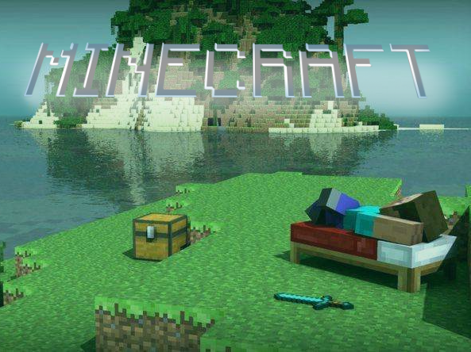

我的世界（网页版） | MinecraftWeb
。。。
版本历程
-
打开
1. 旧版（Web网页版，JavaScript）
过时的 Web 早年实现版本。
纯 Vanilla JavaScript + Three.js 实现。

-
打开
2. Unity版（Windows/Android）
用 Unity 引擎实现的版本，支持 Windows 和 Android，使用 Compute Shader 计算地形。

-
打开
3. AI 网页版1
由 AI 耗时约 4 天实现的网页版本，功能较为简单。
使用 Vue + TypeScript，不支持手机版。

-
打开
4. AI 网页版2（推荐）
由新 AI 实现的网页版本，加入原版的地形和各种矿物、背包物品栏、流体系统等，性能优化较好。
使用 Wasm(Rust) + React + Three.js。